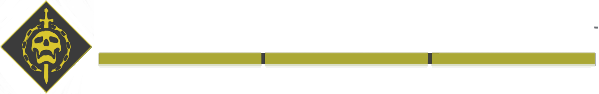
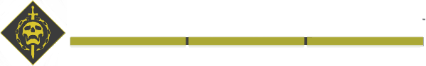

全ての敵は、大きく分けると以下の4つに分類できます。
敵のHPバーに付いているアイコンから、その敵がどの分類に属するのか判断できます。
詳細な説明は、表の一番左にある分類名のリンクからご覧ください。
Destiny 2 戦闘員の分類詳細
Destiny 2に登場する敵の分類について、どのような法則によってなされているかを詳細に解説します。
目次
右三角形はクリックすることで展開できます。
各説明欄の右側にある三角をクリックするとページ先頭まで戻ることができます。
このページの内容は主にPvE向けのみのため、切り替えボタンは設置しておりません。
敵分類早見表
| アイコン (ホバータップでHP) |
グループ名 | フィニッシャー | 有効武器MOD |
|
|
|
|
|
|---|---|---|---|---|---|---|---|---|
| 一般兵 | マイナー | 可能 | 無効 | +100% | スタックをチャージ | 効果なし | ||
| エリート | メジャー | 可能 | 無効 | +100% | スタックを消費 | 特殊弾をドロップ | ||
| ミニボス | メジャー | 可能 | 有効 | +100% | スタックを消費 | ヘビー弾をドロップ | ||
| ボス | ウルトラ | 不可 （ハイヴガーディアンを除く） |
有効 | +150% | スタックを消費 | フィニッシャー不可 |
また、一部の敵や構造物は、上記の分類に加えて（もしくは独自に）、以下に示す小分類を持つ場合があります。
グループとしてはウルトラに分類されます。
グループとしてはウルトラに分類されます。
| 有効武器MOD |
|
|
|
|
|
|---|---|---|---|---|---|
| ビークル | 有効 | +150% | 効果なし | +15% | |
| タレット | 上記表の分類に従う | 有効 | 上記表の分類に従う | 上記表の分類に従う | +30% |
| 砲台 | 有効 | +150% | スタックを消費 | +15% × +30% | |
| 設置物 | 上記表の分類に従う | 無効 | +100% | 効果なし | +30% |
一般兵
エリート
エリートは、通常より少し強力な敵です。HPバーは橙色で、アイコンは盾のような形状をしています。
敵の種類によって、名前に「レベナント」「レジリエント」「汚染された」などの接頭語が付くことがあります。
ゲーム内で「メジャー」と呼ばれるグループに入ります。
より詳細な分類については、ランクの項をご覧ください。
敵の種類によって、名前に「レベナント」「レジリエント」「汚染された」などの接頭語が付くことがあります。
ゲーム内で「メジャー」と呼ばれるグループに入ります。
より詳細な分類については、ランクの項をご覧ください。
ランク
「ランク」は、主に一般兵やエリートに対して用いられる分類方法です。ランク付けは、基本的に敵の種類によって決定されます。
ランクは1～4の間で決まり、数字が大きいほど、強力な戦闘員であると位置づけられます。
敵のランクによって、倒した際にパークやスキルによって回復するエネルギーが変化することがあります。
また、エリートの敵はランクが1段階上の敵と同じような扱いとなります。ミニボス以上の敵はランク4として扱われます。
例: 「レベナント・アコライト」は、アコライト(ランク1)のエリートであるため、ランク2と同等の扱いとなる。
ランクは1～4の間で決まり、数字が大きいほど、強力な戦闘員であると位置づけられます。
敵のランクによって、倒した際にパークやスキルによって回復するエネルギーが変化することがあります。
また、エリートの敵はランクが1段階上の敵と同じような扱いとなります。ミニボス以上の敵はランク4として扱われます。
例: 「レベナント・アコライト」は、アコライト(ランク1)のエリートであるため、ランク2と同等の扱いとなる。
| ランク1 |
|
|
|
|
|
|
|---|---|---|---|---|---|---|
| ランク2 |
|
|
|
|
|
|
| ランク3 |
|
|
|
|
|
|
| ランク4 |
|
|
|
|
|
|
ランク1
ランク1の敵は最も弱く、個々の力はありませんが、大量に出現することで脅威になり得ます。
具体的にどの敵がランク1に分類されるかは、早見表をご覧ください。
具体的にどの敵がランク1に分類されるかは、早見表をご覧ください。
ランク2
ランク2の敵は一般的なHPと攻撃力を持ちます。ホブゴブリンのバリアなど、一部の敵は特別な能力を有していることがあります。
具体的にどの敵がランク2に分類されるかは、早見表をご覧ください。
具体的にどの敵がランク2に分類されるかは、早見表をご覧ください。
ランク3
ランク3の敵は、ランク2の敵より少し高いHPと攻撃力を持ちます。チーフテンのトーテム召喚など、一部の敵は特別な能力を有していることがあります。
具体的にどの敵がランク3に分類されるかは、早見表をご覧ください。
具体的にどの敵がランク3に分類されるかは、早見表をご覧ください。
ランク4
ランク4の敵は、HPも多く攻撃力もあり危険ですが、そこまで頻出することはありません。
敵の種類を問わず、ミニボスやボスは、全てこのランクに分類されます。
具体的にどの敵がランク4に分類されるかは、早見表をご覧ください。
敵の種類を問わず、ミニボスやボスは、全てこのランクに分類されます。
具体的にどの敵がランク4に分類されるかは、早見表をご覧ください。
ミニボス
ミニボスは、通常よりも大きく強力な敵です。HPバーは黄土色で、アイコンは逆向きの三角形をしています。
見た目のサイズも大きく、HPも高いため、頻繁には出現せず、ステージの中間に配置されることが多いです。
また、ほとんどの場合で属性シールドをまとっています。
ゲーム内では、エリートと同じく「メジャー」と呼ばれるグループに入ります。
見た目のサイズも大きく、HPも高いため、頻繁には出現せず、ステージの中間に配置されることが多いです。
また、ほとんどの場合で属性シールドをまとっています。
ゲーム内では、エリートと同じく「メジャー」と呼ばれるグループに入ります。
チャンピオン
特殊な能力を持ったミニボスは、チャンピオンと呼ばれます。ミニボス級のハイヴガーディアンもこれにあたります。
バリア・チャンピオン、 アンストッパブル・チャンピオン、 オーバーロード・チャンピオンの3種類が存在し、対応する装備をしていない場合は倒すことが非常に困難になります。
バリア・チャンピオン、 アンストッパブル・チャンピオン、 オーバーロード・チャンピオンの3種類が存在し、対応する装備をしていない場合は倒すことが非常に困難になります。
<対象の敵>
カバル
- バリア・コロッサス
- アンストッパブル・インセンディオ
- バリア・サービター
- オーバーロード・キャプテン
- バリア・ナイト
- アンストッパブル・オーガ
- 光の戦士のナイト
- 光の戦士のウィザード
- 光の戦士のアコライト
- バリア・ホブゴブリン
- オーバーロード・ミノタウロス
- アンストッパブル・アボミネーション（変異体）
- オーバーロード・チーフテン
- 宿られたアンストッパブル・ファランクス
- 宿られたオーバーロード・ホブゴブリン
ボス
ボスは、ステージの最後などで登場する最も強力な敵です。HPバーは黄色で、アイコンはひし形をしています。

レイドなど、一部のボスはHPバーが画面下部に固定されるものもあります。
ただHPが多いだけでなく、至近距離まで近づくと地面を鳴らして衝撃波を放ったり、独自のギミックやダメージフェイズがあったりと、倒すためには工夫が必要な敵です。
また、ボスにはフィニッシャーをすることができません。
ボスの中で詳細な区分は存在せず、パトロールのボスも、ストライクのボスも、レイドのボスも、全て同じ「ボス」という分類で括ることができます。
ゲーム内では、「ウルトラ」と呼ばれるグループに入ります。

レイドなど、一部のボスはHPバーが画面下部に固定されるものもあります。
ただHPが多いだけでなく、至近距離まで近づくと地面を鳴らして衝撃波を放ったり、独自のギミックやダメージフェイズがあったりと、倒すためには工夫が必要な敵です。
また、ボスにはフィニッシャーをすることができません。
ボスの中で詳細な区分は存在せず、パトロールのボスも、ストライクのボスも、レイドのボスも、全て同じ「ボス」という分類で括ることができます。
ゲーム内では、「ウルトラ」と呼ばれるグループに入ります。
ビークル
ビークルは、主に船や戦車といった、移動・搭乗・戦闘などができるオブジェクト郡を指します。
改造パーツのボス特化やヴォーパル武器は、これに対して効果を発揮できます。
ゲーム内では、「ウルトラ」と呼ばれるグループに入ります。
改造パーツのボス特化やヴォーパル武器は、これに対して効果を発揮できます。
ゲーム内では、「ウルトラ」と呼ばれるグループに入ります。
<対象の敵>
カバル
- インターセプター
- スレッシャー
- ゴリアテタンク
- パイク
- ウォーカー
- スコーン・ウォーカー
- 宿りの汚染
- スパロー
<備考>
インターセプターとパイクに対して、搭乗者がいる場合はマイナー特化の効果が発動する。
タレット
タレットは、船に搭載された自動射撃銃などのオブジェクトを指します。
中にはこちらからダメージを与えられないものも存在します。
ゲーム内では、「ウルトラ」と呼ばれるグループに入ります。
中にはこちらからダメージを与えられないものも存在します。
ゲーム内では、「ウルトラ」と呼ばれるグループに入ります。
砲台
砲台は、移動能力のない敵ユニットを指します。
ビークルとタレットの双方の性質を併せ持つ仕様上、独自の分類となっています。
ゲーム内では、「ウルトラ」と呼ばれるグループに入ります。
ビークルとタレットの双方の性質を併せ持つ仕様上、独自の分類となっています。
ゲーム内では、「ウルトラ」と呼ばれるグループに入ります。
設置物
設置物は、敵によって召喚される移動しないユニットを指します。
ゲーム内では、「ウルトラ」と呼ばれるグループに入ります。
ゲーム内では、「ウルトラ」と呼ばれるグループに入ります。
分類が複雑な敵について
ハイヴガーディアンの分類
ハイヴの光の戦士にはミニボス級とボス級の二種類が存在し、HPバー左のアイコンから判別することができます。
それぞれ、以下のような差があります。
ミニボス級
それぞれ、以下のような差があります。
ミニボス級
- 抑制状態にすると、射撃を停止する
- 遅延や凍結の影響を受ける
- 抑制状態にしても、射撃を停止しない
- 遅延や凍結の影響を受けない（付与自体は可能）
- 他のボスと違い、フィニッシャーが可能
失われたセクターのボス
失われたセクターの最奥部にはボスがいますが、その分類はセクターによってミニボスかボスのどちらかに分かれます。
EDZとネッススのセクターにいるボスはミニボス級、それ以外のロケーションのセクターにいるボスはボス級となっています。
ただし、伝説/達人難易度の場合は、全てのロケーションがボス級に変更されています。
ただし、伝説/達人難易度の場合は、全てのロケーションがボス級に変更されています。
ブリッグやサービターはビークルではないのか
フォールンのブリッグ、サービター、シャンクや、ベックスのハイドラ、ワイバーンなどの敵は、ビークルではなく一般兵に分類されます。エリートであればエリートとして扱われます。
これはボスの場合も同様で、セピックス・プライムやサーベル4、マッドワーデンなどの敵も、ビークルではなくボスとして扱われます。
ただし、砕かれた玉座のボスであるドゥル・インカルは、エリートと同じ扱いとなっています。これは恐らく不具合かと思われています。
これはボスの場合も同様で、セピックス・プライムやサーベル4、マッドワーデンなどの敵も、ビークルではなくボスとして扱われます。
ただし、砕かれた玉座のボスであるドゥル・インカルは、エリートと同じ扱いとなっています。これは恐らく不具合かと思われています。
出典
The Comprehensive Destiny 2 Data & Information更新履歴
過去のページを確認するコメントを読み込んでいます...